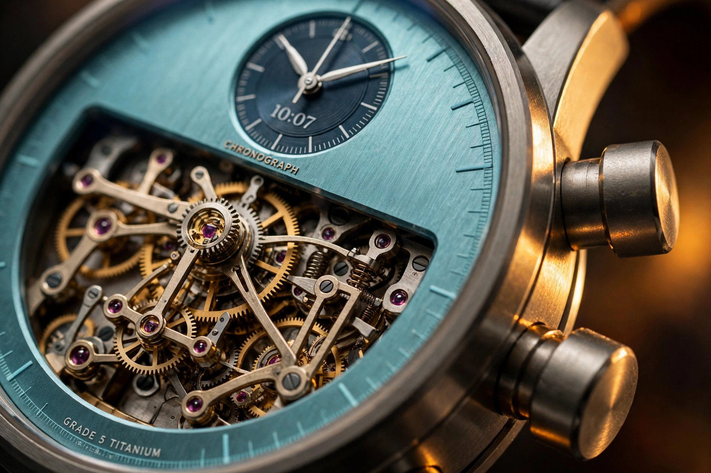

Flyback, Twice: Inside the MB&F Sequential EVO Titanium

Two stopwatches. One escapement. A flyback on each, resettable independently, at any phase of the other. Stop and think about what the mainspring has to fund: two chronograph trains, two return-to-zero spring systems, and restart torque against those springs, all while the timekeeping train holds 3 Hz on 72 hours from two barrels. Now run it at the wrist of someone who bought the rubber-strap sport version, which is exactly what MB&F did in January 2026 when the LM Sequential Flyback EVO arrived in grade-5 titanium. Either the engineering is real or the watch is jewellery pretending otherwise. Worth checking which.
Two trains, one oscillator
Start with what the calibre actually is, because sequential is a name that hides an argument. Most dual-chronograph watches are either a rattrapante, two hands on one train, or a single chronograph with extra displays. McDonnell's architecture is two fully independent chronograph mechanisms inside one case, sharing a common oscillator. Left timer: seconds at 9, minutes at 11. Right timer: seconds at 3, minutes at 1. Each has its own column wheel, its own start and stop pushers, two and four for the left, eight and ten for the right. The hands you see are separate mechanical systems that happen to agree on the timebase, not one system with two pointers.
Feeding two trains
Sharing one oscillator between two independent trains is the kind of decision that sounds elegant and tests like a nightmare. Every chronograph train draws energy and injects friction whenever it runs, which drags on the oscillator's amplitude and, through amplitude, on its rate. Two trains running simultaneously is the worst case, and McDonnell's answer is internally jewelled vertical clutches, which matter for two reasons that compound. A vertical clutch engages through friction contact rather than meshing teeth, so starting a timer does not produce the small hand jump that lateral clutches show, and the jewelling keeps the friction bill low enough that two running chronographs still leave the shared oscillator enough amplitude to keep time honestly. Watch Advice's coverage of the 2026 release specifically calls out the jewelling as the energy-efficiency play that makes the dual architecture viable. It is not decoration. It is the budget.
The flyback held back
Flyback on a single chronograph is already an energy event. Press the pusher mid-timing and the mechanism has to force every hand to zero against the return springs and immediately restart, converting stored spring energy into a snap of rotation in a fraction of a second. Flyback on two independent trains, each of which must also keep behaving while the other snaps home, is the kind of problem that explains why McDonnell had the idea in the original Sequential concept and then deliberately left it out. Watch Advice reports the sequence plainly: the movement architecture was designed from the outset to accommodate flyback, but perfecting the system required months of prototyping and multiple redesigns, and with so many untested elements already in the 2022 original, shipping everything at once would have been reckless. The flyback alone demanded its own jewelled roller inside the return-to-zero mechanism to keep friction from blocking the snap home. No supplier produced such a component, so McDonnell made it himself for the prototype, and that part now sits inside one of five patented elements in the calibre. Restrained engineering. Released 2024 in the classic Legacy Machine case, completed 2026 in the EVO.
A binary switch in metal
Then there is the Twinverter, which is the part of this watch that feels like computer architecture escaped into metal. A rocker at 9 o'clock that acts as a mechanical binary switch: one press instantly inverts the running status of both chronographs. Both stopped becomes both running. Both running becomes both stopped. One running and one stopped swaps the states. If you have ever written a truth table, you are looking at a bitwise NOT over two bits, executed by cams and levers with no electrical input whatsoever, and the modes that fall out of it are genuinely practical rather than brochure filler. Independent timing for two events. Simultaneous timing for comparing two competitors. Cumulative timing, where the Twinverter accumulates split intervals across the two trains. Sequential lap timing, the namesake mode, where each press ends one lap and starts the next on the opposite chronograph. And flyback timing on either train, combinable with all of the above. iMBOLDN's coverage adds the detail that the central hand can act as a combined chronograph display when the Twinverter is engaged, which turns the coupled state into something readable at a glance instead of a puzzle. One rocker, five timing modes, zero additional pushers. Most chronographs add functions by adding controls. This one adds functions by coupling the ones it has.
Case as argument
That is the 2022 idea and the 2024 flyback. The 2026 move is the case, and the case is the argument. EVO is MB&F's sport line, and bringing the completed Sequential calibre into it means committing the most complex chronograph architecture the brand makes to a daily-wear proposition: 44 millimetres of grade-5 titanium at 18.2 thick, an 80-metre water rating with a screw-down crown, an integrated white rubber strap on a titanium folding clasp, and the proprietary FlexRing shock-absorption system that isolates the movement from vertical and lateral impacts. FlexRing deserves its own paragraph because it is what makes the rest honest. A 621-component movement with two chronograph trains, column wheels, and a binary-switch rocker is a forest of pivots and levers, and every one of them is a shock-transmission path. Conventional shock protection hardens individual jewels; a FlexRing suspends the entire movement in a monobloc dampener that absorbs vertical and lateral energy before it reaches the calibre. Without it, the Sequential EVO Ti would be a rally car with solid engine mounts. With it, an 80-metre, rubber-strapped daily wearer is a defensible engineering claim rather than a styling exercise. Pricing sits at CHF 168,000 plus taxes, per Watch Advice, and Fortloc converts that to a little over $216,000. For that money you get arguably the most mechanically interactive chronograph on the market. You also get to stop worrying about wearing it.
Reading the chaos
Read the dial the way the watchmaker intended, because at first glance it is chaos. Aquamarine dial plate, full openwork, the two chronograph systems floating as separate mechanical islands. The time display is tilted at 6 o'clock, angled toward the wearer's line of sight so the wrist never has to rotate, a trait carried through the LM Sequential line and one of those ergonomic details that reads as quirk until you wear it. Darkened bridge finishes keep the industrial greys from going flat. Hourstriker's coverage notes that the subdials appear to float above the mainplate, and the visual trick works because the underlying structure genuinely is suspended in three dimensions rather than printed to look that way. A power-reserve indicator sits on the caseback, honest about the 72 hours the twin barrels hold. Sapphire crystals front and back get anti-reflective coating. Nothing here is an applied dial pretending at depth; the depth is mechanical and the photograph just gets to show it.
Act three
Credit the lineage, because this watch is the third act. Act one: the 2022 LM Sequential EVO, McDonnell's first chronograph and 20th calibre, winning the GPHG Aiguille d'Or, the industry's grand prize, in its debut year. Act two: the 2024 LM Sequential Flyback, the held-back flyback function finally added, but housed in the traditional Legacy Machine case, which kept it in the dress-chronograph register. Act three: the 2026 Flyback EVO in titanium, the complete mechanism in the sport case, which is the first time the full McDonnell concept has existed in wearable form rather than in principle. Nearly a decade from first sketch to this watch, per Watch Advice, and the deliberate pacing is the most old-fashioned thing about it. Features shipped when proven. Nothing earlier.
Honest ledger
Now the honest ledger, because CHF 168,000 buys scrutiny, not reverence. Eighteen point two millimetres thick and 44 wide: this is a large watch by any register, and the EVO treatment does not shrink the calibre, it just hardens the case around it. Manual winding on a watch marketed for active wear is a genuine friction point; the 72-hour reserve softens it, and so does the ritual appeal for MB&F's actual buyers, but a sport watch you must wind daily is a sport watch with an asterisk. Two barrels driving 621 components at 3 Hz is a conservative energy strategy, and 3 Hz against today's 4 and 5 Hz fashion is a deliberate trade, fewer beats per day means less wear and lower drain on the loaded train, at the cost of a slightly coarser seconds resolution on the chronograph. Fine for laps, noticeable if you time hundredths. There is no measured chronometry published beyond the specification, no long-term service data on how the jewelled flyback roller wears over years of use, and no confirmed production figure, though Hourstriker reports that assembly difficulty will keep volumes highly limited. I have not handled this watch, and no independent hands-on review exists yet. All of that should be stated in the same paragraph as the admiration, because an engineering article that only admires is a press release with better vocabulary.
| Specification | MB&F LM Sequential Flyback EVO Titanium |
|---|---|
| Case | Grade-5 titanium, 44 mm diameter, 18.2 mm thick; screw-down crown; sapphire crystals front and back with anti-reflective coating |
| Dial | Full openworked dial with aquamarine dial plate; tilted time display at 6 o'clock; darkened bridge finishes |
| Movement | Manually wound, fully integrated dual-chronograph flyback calibre developed by Stephen McDonnell; 621 components, 63 jewels, 3 Hz (21,600 vph), twin barrels |
| Chronographs | Two fully independent column-wheel chronographs sharing one oscillator; internally jewelled vertical clutches; jewelled roller in flyback return-to-zero mechanism; five patented elements |
| Controls | Pushers at 2 and 4 control left chronograph (seconds at 9, minutes at 11); pushers at 8 and 10 control right chronograph (seconds at 3, minutes at 1); Twinverter rocker at 9 inverts running status of both |
| Timing modes | Independent, simultaneous/split-second, cumulative, sequential lap timing, flyback; central hand acts as combined chronograph when Twinverter is engaged |
| Power reserve | 72 hours; indicator on caseback |
| Durability | 80 metres / 8 ATM water resistance; FlexRing shock-absorption system isolating movement from vertical and lateral impacts |
| Strap | Integrated white rubber strap with titanium folding clasp |
| Price | CHF 168,000 plus taxes (approximately $216,000 per Fortloc) |
| Lineage | 2022 LM Sequential EVO (GPHG Aiguille d'Or); 2024 LM Sequential Flyback in classic Legacy Machine case; 2026 Flyback EVO first EVO-case execution of the complete concept |
| Unresolved | No published measured chronometry; no long-term wear data on the flyback mechanism; no confirmed production numbers; no independent hands-on review |
Honesty block: This article is based on coverage from Watch Advice (January 26, 2026, updated September 10, 2026), Fortloc (February 4, 2026), iMBOLDN (January 21, 2026), and Hourstriker, plus MB&F's published specifications via those outlets. I have not handled this watch, and no independent hands-on review exists. The CHF 168,000 price is the recommended retail price before taxes reported by Watch Advice; Fortloc's dollar conversion is approximate and exchange-rate dependent. The five patents and the jewelled-roller origin story are reported by Watch Advice, not verified against patent filings. The 72-hour reserve, 621 components, 63 jewels, and 3 Hz figures are corroborated across Watch Advice, Fortloc, and iMBOLDN. The nearly-a-decade development timeline and the holdback rationale for the flyback are per Watch Advice's reporting on McDonnell's process.
Most brands iterate by adding complications to existing cases until the watch becomes unwearable. MB&F did the opposite with this one: built the most complex chronograph architecture in the catalogue, then spent four years proving it and putting it in a case you can swim in. The Sequential Flyback EVO Ti is what happens when a watchmaker refuses to confuse complication with progress, holds back the hard part until it works, and then asks the titanium case to keep up with the calibre instead of the other way around. Six hundred twenty-one components. Two flybacks. One rocker. And a roller no supplier would make, machined by hand, because the watch would not exist without it.